3 Dots menu

Reminders⌁
You can setup various reminders with this menu, just touch the + button bottom right.
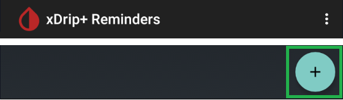
Name it as you like
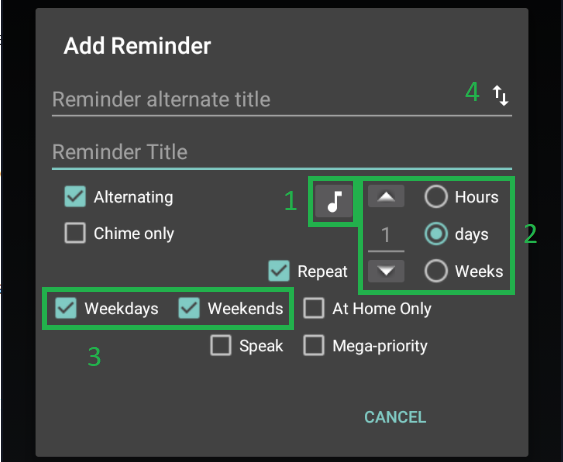
The music note icon 1 allows you to select the soud that will ring when the reminder activates.
You can set the reminder to trigger in a defined delay from now using the selection 2 hours, days, weeks and the numeric value. If you set Repeat it will repeat with the same delay, for example you can set it to alarm every 2 weeks.
You can set it to trigger only during weekdays or weekends, or both 3.
If you select Alternating, it will display different messages 4 and you can swap them with the double arrow icon.
You can make the reminder being spoken when it triggers.
If you select Chime only, the reminder will not need to be acknowledged: it will ring only once. Without this selection it will sound repeatedly until dismissed.
At Home Only will make the reminder trigger only when the phone is connected to your home Wi-Fi, see below how to set it.
Toggling the checkboxes will give hints on the actual function.
Once set, you can change the reminder title by touching it.
You can modify it with a long touch.
Swiping a reminder to the left snoozes it by 30 minutes (default) and you can change that delay with the button below.
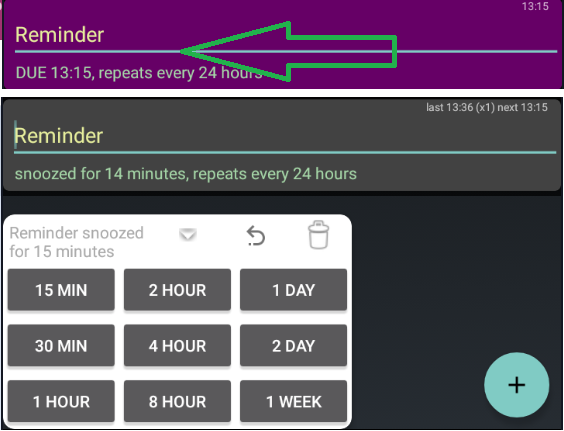
Swiping a reminder to the right allows you to either 1 snooze it by the time selected below (from 15 minutes to 1 week) or 3 delete it. If you change your mind you can undo the changes 2.

Another 3 dots menu is available top right.

You can define your home network with Set Home Network, this is used when the reminder is set to At Home Only.
You can disable the reminders during the night, you can also disable all alerts in which case the next checkbox will allow you to restart (enable back all reminders) the next morning.
Emergency Messages⌁
xDrip+ can automatically send text messages in certain conditions to alert others. This obviously requires phone network coverage and a provisionned SIM card. Phone location must be authorized for xDrip+ to use this feature.
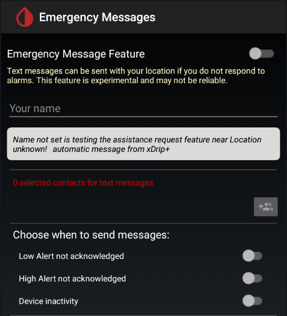
In order to set it up you need to first add a contact, then optionally put a name and finally decide upon which emergency situation will trigger the SMS.
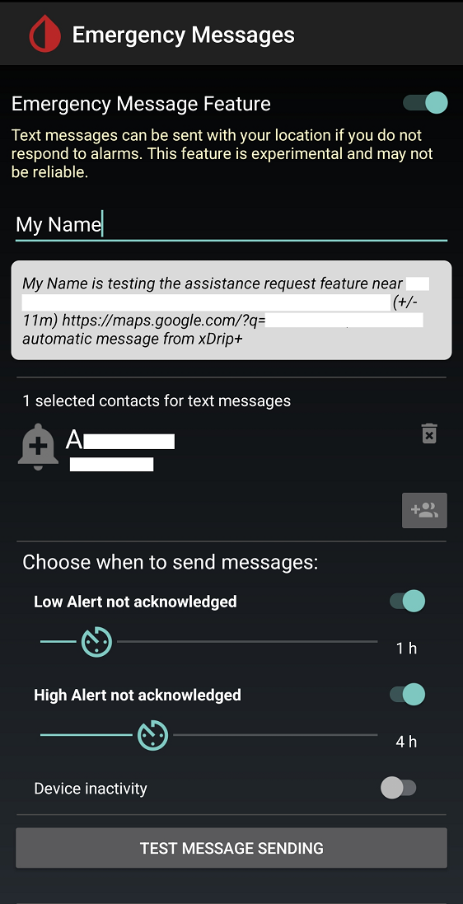
You can then send a test message to verify correct functioning of the emergency system.
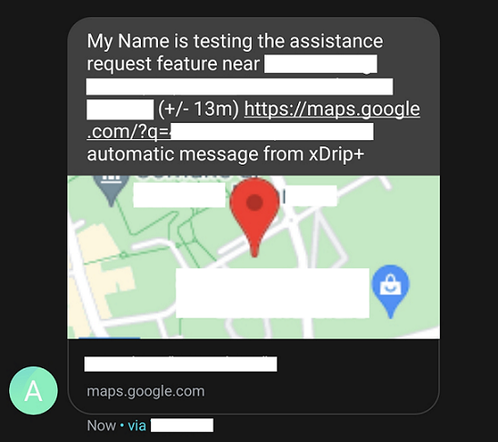
Import Export Features⌁
In this menu you can find various options to import (only the entire xDrip+ database) or export data.

See here for database and settings import/export.
You can export data starting from a certain date to now, in SiDiary format. The file will be saved in /storage/emulated/0/xDrip as a zip file containing the coma separated values list of data.
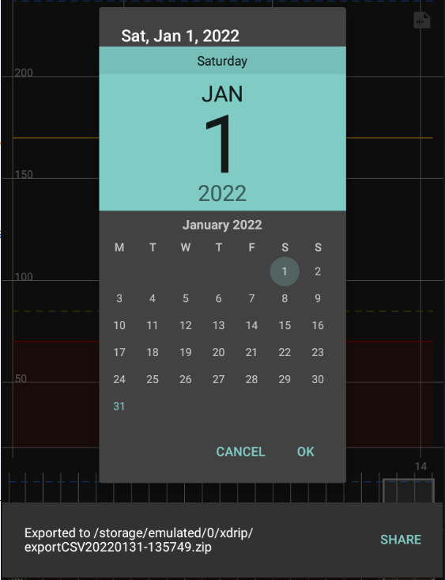
Crowd-sources translation⌁
xDrip+ translation relies on voluntaries with Crowdin.
You're welcome to contribute, contact the managers at the bottom of the page.
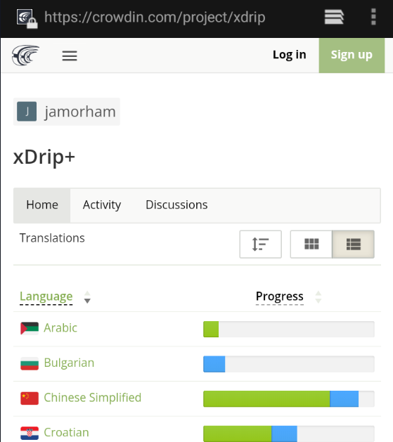
Events Log⌁
Events log gives many insights of what xDrip+ is doing, you can add more traces adding tags (see here).
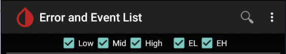
You can also filter the items displayed by selecting the desired log or events with the check boxes above the list.
When sharing screenshots of the error log make sure to enable all and manually hide prsonal information (credentials, serial numbers, ...)
High displays errors
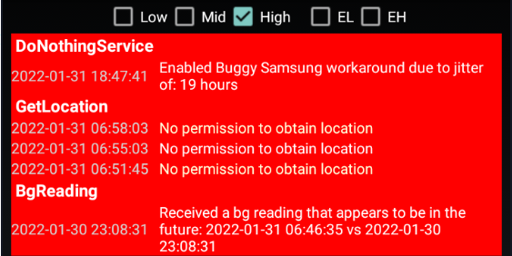
Mid displays traces
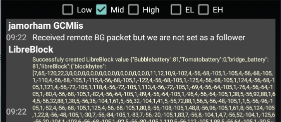
Low displays all others (lower importance)
EH displays higher importance events
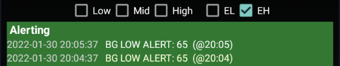
EL displays lower importance events.
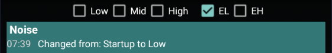
Libre trend⌁
If you use a Libre sensor Show Libre Trend will display the last 45 minutes sensor information, minute by minute.
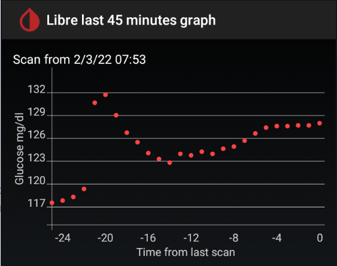
Share Settings via QR code⌁
This is a shortcut to Menu/Settings / Show Settings QR Code
Check for Updated Version⌁
This entry triggers a version check as defined in Menu/Settings / xDrip+ Update Settings
If a new version is available it will open the download screen.
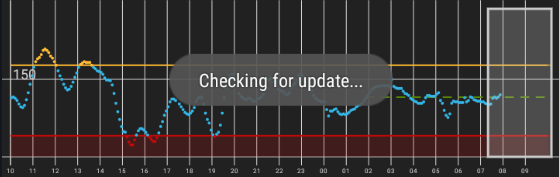
Send Feedback to Developers⌁
Only use this feature to send compliments.
For other enquiries prefer xDrip+ GitHub discussions or Facebook.